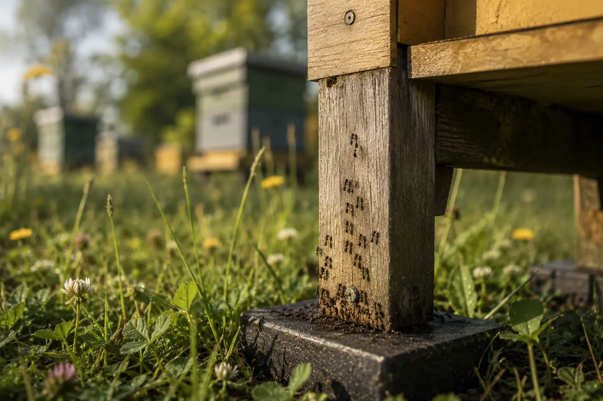
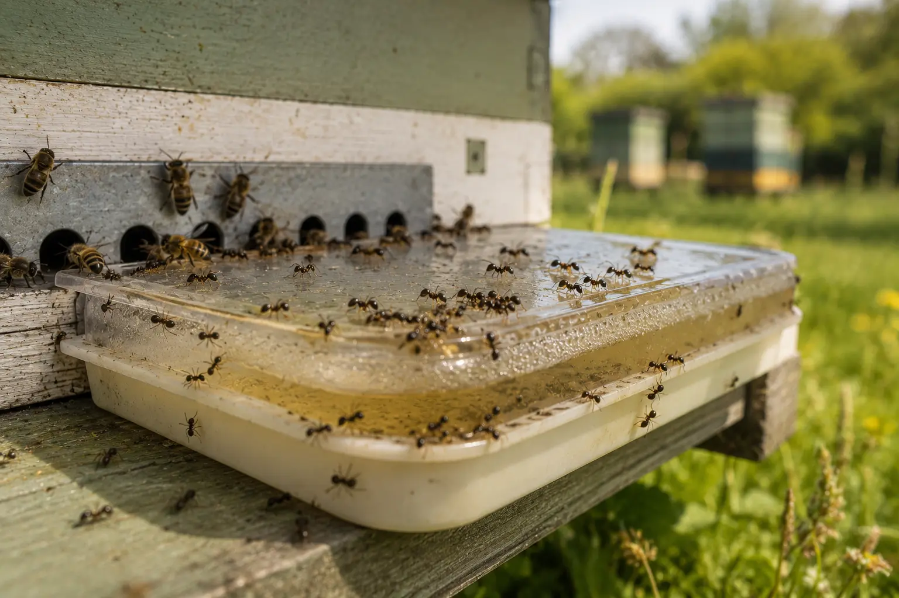
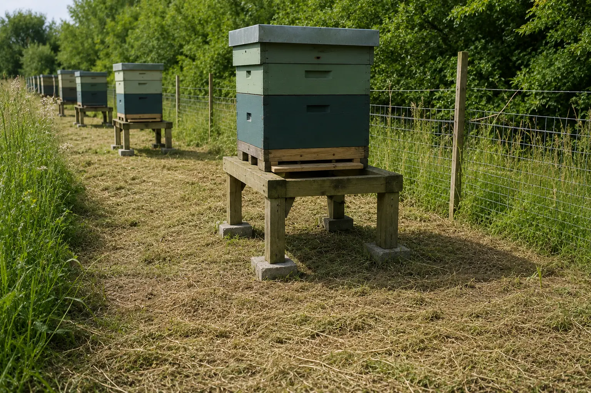

Pest nuisance guide
Ants in Beehives (UK) – Are They a Problem and What Should You Do?
Last updated: 1 May 2026

Ants are common around beehives, particularly isn warm weather or where feed has been spilled. In most UK apiaries they are more of a nuisance than a serious pest, and a strong colony will usually defend itself well enough without the beekeeper needing to interfere.
The problem comes when ants are present in large numbers, repeatedly entering feeders, nesting under hive parts, or appearing inside a hive that is already weak. In that situation, the ants may not be the main cause of the problem, but they are a useful warning sign that something around the hive needs attention.
This page explains why ants are attracted to beehives, how to tell the difference between normal background activity and a real nuisance, and how to reduce the problem using bee-safe methods.
Why ants are attracted to beehives
Ants are attracted to easy food. A beehive can provide several tempting opportunities, especially where syrup has been spilled during feeding, fondant has been exposed, honey has leaked from comb, or a feeder is not sealed properly. Even a small amount of sugary residue on the outside of a hive can create a trail that brings more ants into the apiary.
Hives can also provide warmth and shelter. Ants may gather under roofs, in gaps around stands, beneath old equipment, or in vegetation close to hive legs. This does not always mean the colony is under attack, but it does mean the apiary should be checked for leaks, exposed feed and easy access routes.
Ants are more likely to become noticeable around weak colonies, small colonies, nucs or hives that are being fed. These colonies may have fewer bees to defend the entrance and less ability to patrol gaps around the crown board, roof or feeder.
Signs of ants around your hive

The most obvious sign is a visible trail of ants moving up hive legs, across a stand or under the roof. You may also find ants around feeders, syrup containers, exposed fondant, old comb or sticky equipment left near the hive.
Ants under the roof or crown board are also common. A small number can usually be brushed away during an inspection, but repeated activity in the same place suggests there may be an attractant or access route that needs correcting.
If ants are nesting directly under a hive stand, in grass around the legs, or in rotten timber nearby, the hive may experience constant nuisance pressure. That is usually a management issue rather than an emergency, but it is worth dealing with before the colony becomes stressed.
Are ants dangerous to bees?
In most cases, ants are not dangerous to a healthy honey bee colony. A strong colony is well defended and can usually prevent ants from reaching brood, stores or sensitive areas inside the hive.
Ants become more of a concern when the colony is weak, queenless, short of bees, heavily stressed or already struggling with disease, starvation, robbing or wasp pressure. In these cases, ants can add to the disturbance and may exploit exposed food sources that the bees are unable to protect properly.
The key point is not to assume that ants are the root cause of every problem. If a colony is declining, has poor entrance activity, has little brood, or is failing to build up, look for wider colony health issues as well as dealing with the ants.
When ants become a problem
Ant activity becomes more significant when ants are regularly entering the hive rather than simply walking around the outside. Ants inside feeders, under the crown board, around exposed stores or close to brood areas should be taken more seriously than the occasional ant on a hive stand.
Heavy ant trails can also suggest a leaking feeder, spilled syrup or poor hygiene around the apiary. If feeding is taking place, inspect the feeder and surrounding area carefully. A poorly sealed feeder can attract ants, wasps and robbing bees at the same time.
If the colony appears unsettled, defensive, weak or slow to expand, treat the ants as one part of a wider inspection. Check stores, queen status, brood pattern, disease signs and entrance activity before deciding what action is needed.
How to prevent ants in your apiary

Prevention starts with hygiene. Avoid spilling syrup when feeding, clean up drips straight away and do not leave exposed comb, cappings, honey or old feeder parts near the apiary. What looks like a minor spill to the beekeeper can be a major food source for ants.
Keep vegetation away from hive legs and hive bodies. Long grass, brambles or stems touching the hive can act like a bridge, allowing ants to bypass any barrier on the stand. A clear space around the hive also makes it easier to see trails and spot other pest activity early.
Good hive stands help as well. Hives kept directly on the ground are more likely to suffer from damp, pests and poor access. A stable stand makes inspections easier and gives you more control over ant access points.
How to control ants safely
The safest control methods are physical rather than chemical. If ants are climbing the hive stand, use a suitable physical barrier on the stand legs, such as an oil tray, water moat, sticky barrier or grease band, making sure it cannot contaminate the hive or trap bees.
If ants are using a trail from nearby vegetation, cut the vegetation back and remove any bridge into the hive. If they are nesting under old wood, slabs, bricks or rubbish near the apiary, tidy the area and remove unnecessary shelter.
In some cases, shifting the hive stand slightly within the apiary can help disrupt established trails, but avoid unnecessary hive movement if the colony is already stressed. Small adjustments around the stand and feeder are usually enough.
What not to do
Do not use household ant powders, sprays or pesticide baits near beehives. Products designed for patios, kitchens or garden paths are not designed for use around bees and may contaminate the hive, harm foragers or create avoidable risk in the apiary.
Do not overreact to one or two ants. A few ants on a hive stand do not mean the colony is failing. Start by removing attractants, checking feeders and improving hygiene before taking stronger action.
Do not ignore the colony itself. If ants are inside the hive in large numbers, the more important question is often why the bees are not keeping them out. Check colony strength, queen status, stores and signs of disease or robbing.
Ants vs other hive pests
Ants are usually far less serious than pests such as wax moth, repeated wasp pressure around beehives, or colony-health problems linked to varroa symptoms. They are normally a nuisance pest rather than a primary colony killer.
If a hive is weak, ants may simply be taking advantage of an existing problem. In that situation, it is worth reading about weak colonies, starvation signs and wider hive problems rather than treating the ants as the only issue.
How HiveTag can help
Repeated ant activity is worth recording because it can reveal patterns. If ants keep appearing after feeding, the issue may be a feeder leak or spilled syrup. If they keep appearing around the same colony, the hive may be weaker than the others.
HiveTag can help you record pest observations, feeding notes, colony strength and follow-up tasks so that small issues are not forgotten between inspections.
Learn more about HiveTag.
Ants in Beehives FAQ
Usually not. Strong colonies can normally tolerate a few ants around the hive, but large infestations can disturb weak colonies, contaminate feeders and indicate that syrup, honey or exposed food is attracting them.
Ants are usually attracted by sugar sources such as syrup, honey, spilled feed, exposed comb or leaking feeders. They may also use warm, dry spaces under the roof, crown board or hive stand.
Not usually. The aim is to reduce nuisance levels, remove attractants and stop ants entering feeders or the main hive, rather than trying to eliminate every ant in the apiary.
The safest approach is good apiary hygiene, cutting back vegetation that touches the hive, fixing feeder leaks and using physical barriers on hive stand legs. Avoid using pesticides near hives because they may harm bees.